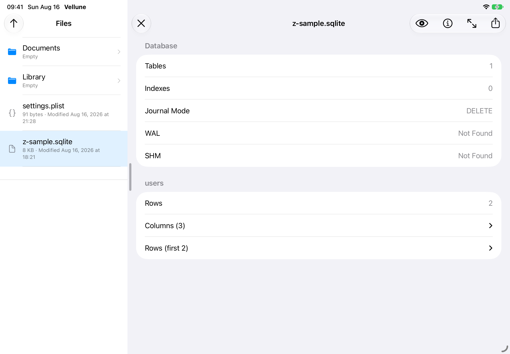
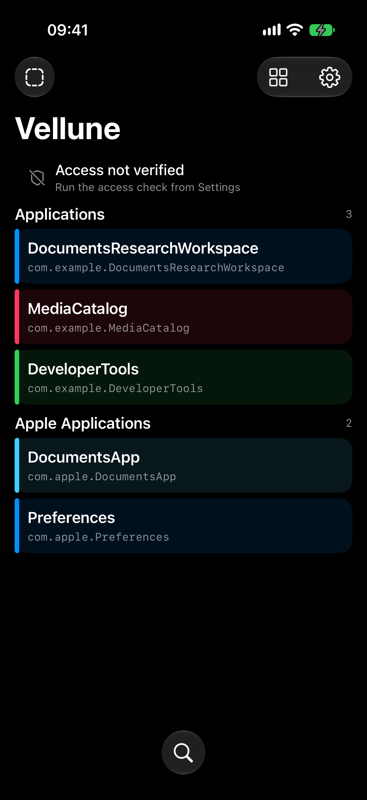

01
Container discovery
Indexes Application, App Group, plugin, internal daemon, System Data, and System Group paths with direct access or fsgetpath fallback.
Native on iPhone & iPad
Vellune turns bad_query into a guarded file workspace—discover containers, inspect rich formats, stream exports, archive folders, and make verified edits with a permanent version history.


Designed from the exploit outward
Every layer—from access grants and adaptive navigation to previews, sharing, and versioned replacement—is designed around the real behavior of bad_query.
Indexes Application, App Group, plugin, internal daemon, System Data, and System Group paths with direct access or fsgetpath fallback.
Start from a grid or list of Apps. Keep files beside a resizable preview on iPad, or move through a focused full-screen flow on iPhone.
Adaptive navigation · Remembered layoutExplore plist and JSON trees, text, images, PDF, Hex, SQLite, ZIP, fonts, cookies, Mach-O metadata, signatures, and entitlements.
Structure · Source · Preview · HexPrepare any file on demand, stream large copies in 1 MiB chunks, track progress, cancel cleanly, or archive a folder as ZIP.
Bounded memory · Empty folders preservedEdit JSON and plist files through a temporary copy. The Version Vault preserves the original and every pre-save revision before verified replacement.
SHA-256 verified · Restore creates a safety backupCompatibility
Vellune supports iOS and iPadOS 26 through 27 beta 3. This is a deliberately conservative range based on the versions implemented and tested in Vellune—not merely the broader range reported by the upstream proof of concept.
bad_query access path.Both adaptive interfaces and the complete schema 19 regression suite are verified on physical devices. Exact behavior can still change between OS builds.
PASS MobileGestalt file access
handle=1 · bytes=10446
PASS On-demand file and folder sharing
streamed · cancelled cleanly · ZIP verified
PASS Directory Markdown export
current folder · recursive traversal
PASS Backup, replace, and restore
original retained · revisions deduplicatedEvidence, not assumptions
Vellune carries a schema-versioned on-device regression suite. Twenty checks verify access, discovery, previews, streamed export, ZIP policy, cancellation, Markdown, backup, restore, and safe editing.
Build it yourself
git clone https://github.com/everettjf/velluneOpen Vellune.xcodeproj in Xcode 27 beta.
Select a physical iPhone or iPad, configure signing, then launch.
Vellune 1.1